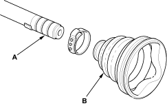
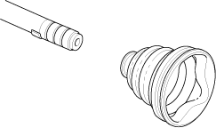
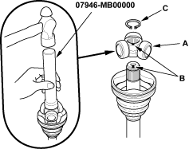
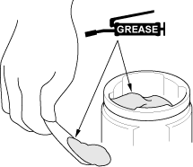

Special Tools Required
- Boot band tool, KD-3191 or equivalent commercially available
- Boot band pincers, Kent-Moore J-35910 or equivalent commercially available
- Boot band pincers, commercially available
NOTE: Refer to the Exploded View as needed during this procedure.
Inboard Joint Side
- Wrap the splines with vinyl tape (A) to prevent damage to the inboard boot (B).
Ear Clamp Type

Double Loop Type

- Install the inboard boot onto the driveshaft, then remove the vinyl tape. Be careful not to damage the inboard boot.
NOTE:
- When replacing the inboard boot and band, install the ear clamp band.
- When replacing the band only, install the double loop band.
- Install the spider and rollers (A) onto the driveshaft by aligning the marks (B), install it using special tool.

- Fit the circlip (C) into the driveshaft groove. Always rotate the circlip in its groove to make sure it is fully seated.
- Pack the inboard joint with the joint grease included in the new driveshaft set.
Grease quantity
Inboard joint:
115 - 135 g (4.1 - 4.8 oz)
